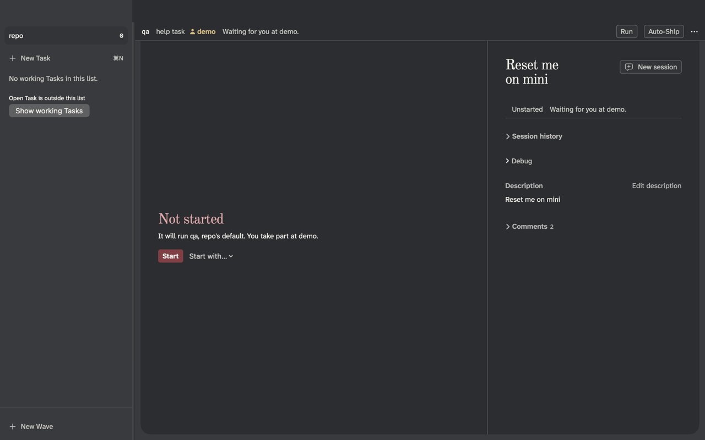
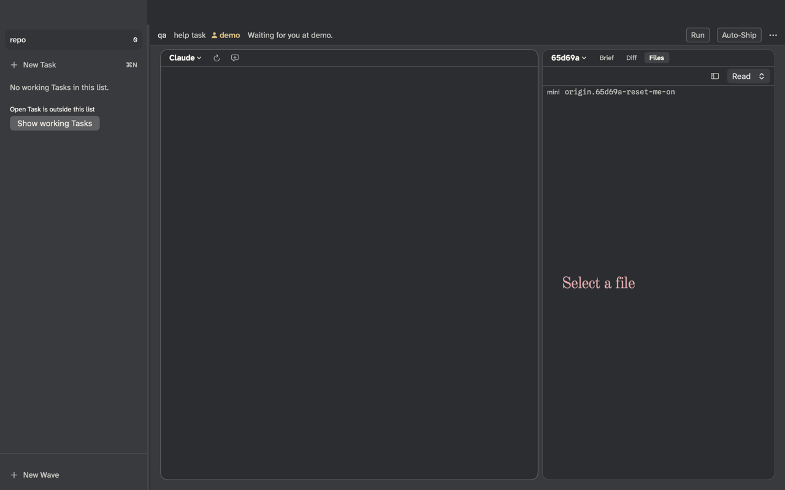

Branch lf at a69ea38292, then with this run's fixes. Two private Machines on one Mac (laptop, mini) under /tmp/q83, joined by a stand-in ssh; stand-in claude on each prints its Machine, its --session-id, and echoes lines read from its tty. Screen locked throughout. Recipe: .lf/qa/remote-task-workspace.md. Earlier runs: 45b450065a:scratch/qa.html.
The Task 65d69a was filed on the laptop, moved to mini while unstarted, and run from the laptop (lf task run → mini, stops at demo with a Session). The laptop's own store never saw that Graph.
| Scenario | What I did | What I saw |
|---|---|---|
| Reset session, server half | Desktop's exact session.new over the laptop socket: {id, task: task_65d69a…, agent: "claude", request_id} |
Laptop logged it and routed it to mini. Answer: task_ids[0] and work.id are the laptop's Task, workspace mini's checkout, open_argv lf open --task … --session … --here. Opening that argv in a PTY: provider on mini … args: --session-id a9f279f5… (was ed1363de…), typed after reset → mini received: after reset; detach printed Return with: lf open --task … --session …. |
| Same Reset sent again | Same request ID | Same answer; mini launched nothing new (claude log unchanged). |
| Reset without its Task | task: null | Refused: outcome_unknown "Session … was not found; inspect the affected work before retrying". Expected refusal; the code overstates a plain not-found. Desktop always sends the Task now. |
| Reset session, click | Dev build with the QA hook: clicked plus.bubble in the Session strip (twice), and the Brief tab as a control |
Neither did anything: no request reached the server and Brief stayed unselected. Hook clicks don't reach pane strip controls; this is also why the Slice 6 run saw "no reset request". The click itself is unchecked. |
| New conversation | The argv Desktop builds for a remote Task: lf desktop shell task_65d69a… --id qa-newconv-1 --create -- lf --interactive --task 65d69a : '<prompt>', in a PTY |
Shell ran on mini: provider on mini in …/origin.65d69a-reset-me-on, new thread 9aae5f1a…, typed line reached mini. Laptop: no checkout, no provider. Served session.list --task from the laptop then listed both Sessions, each opening with lf open --task. Closed with --close --started-on <mini>. |
lf session list --task 65d69a on the laptop | CLI, repo cwd | Before: "No Sessions." while mini ran two. After: both, the hint naming lf open --task …; with mini unreachable: Error: machine "mini": unreachable: …. |
| Open the Task in Desktop | loopflow://repo/task/65d69a in the Dev build |
Before: the Session slot showed Not started with Start, brief "Unstarted", while the header read "Waiting for you at demo." The laptop's plan row ("No Task Graph has run") outranked the routed task.get, whose row from mini says active/working. After: the Session pane (Claude) opens, Files names mini origin.65d69a-reset-me-on; desktop focus -p session → usable, capture shows mini's provider and the line typed after reset. |
| Creation receipt for a routed Reset | creation.get on each socket |
Laptop answers null; mini holds the receipt. Desktop's recovery re-sends on null and then throws "The Machine has no receipt for creation …". Only bites when a Reset's answer is lost. Recorded in scratch/questions.md. |


cacheDisplay while locked; desktop capture read mini's provider.)lf session list --task asks the owner's server for a Task another Machine runs (session.rs::list_remote_task), as lf task status does. Test: server_routed_task_workspace runs the CLI from the laptop's checkout; it fails with "No Sessions." without the fix.lifecycle/section decide (WorkModel.ownerStanding, RoadmapTask.standing(as:)). Test: DesktopHeadlessTests/remoteTaskStandsWhereItsOwnerSays; fails without the fix.cargo test -p loopflow --test integration machine_commands::server_routed_task_workspace ok, 31 s (fails without the CLI fix)
cargo clippy -p loopflow --all-targets -- -D warnings; cargo fmt clean
scripts/test_desktop.sh --filter 'DesktopHeadlessTests|WorkDestinationTests|WorkspacePanesTests|WorkCacheTests|EmptyStateTests|WorkNavigationTests|TaskConceptTests|RemoteTaskWorkspaceTests|WarmPaneMountTests'
200 tests, 1 failure (below)
Dev build: open a mini-run Task → Session pane usable on mini; Files on mini
WorkNavigationTests/retainedRepositoryConversation fails at this branch's head, with or without this run's change (pane(forSessionId: "repo-primary") is nil). Not established whether main fails too; gate must look.scratch/questions.md).lf session list --task for a remote Task applies --task, --headless and paging only, as the served read does; --on, --available, --search, --primary are ignored there.